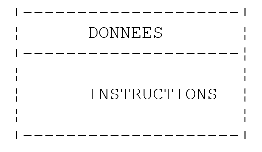

2. أساسيات لغة Java
2.1. مقدمة
نتعامل مع Java أولاً كلغة برمجة كلاسيكية. وسنتناول الكائنات لاحقًا.
يوجد في البرنامج نوعان من العناصر
- البيانات
- الأوامر التي تعالجها
نسعى عادةً إلى فصل البيانات عن التعليمات:

2.2. بيانات Java
تستخدم Java أنواع البيانات التالية:
- الأعداد الصحيحة
- الأعداد الحقيقية
- الأحرف وسلاسل الأحرف
- القيم المنطقية
- الكائنات
2.2.1. أنواع البيانات المحددة مسبقًا
النوع | الترميز | النطاق |
char | 2 بايت | حرف Unicode |
int | 4 بايت | [-231, 231-1] |
long | 8 بايت | [-263, 263 -1] |
byte | 1 بايت | [-27 , 27 -1] |
short | 2 بايت | [-215, 215-1] |
float | 4 بايت | [3.4 10-38, 3.4 10+38] كقيمة مطلقة |
double | 8 بايت | [1.7 10-308 , 1.7 10+308] كقيمة مطلقة |
boolean | 1 بت | صحيح، خطأ |
String | مرجع الكائن | سلسلة أحرف |
Date | مرجع الكائن | التاريخ |
Character | رقم مرجعي للكائن | char |
Integer | مرجع الكائن | int |
Long | مرجع الكائن | long |
Byte | مرجع الكائن | بايت |
Float | مرجع الكائن | float |
Double | مرجع الكائن | double |
Boolean | مرجع الكائن | منطقية |
2.2.2. ترميز البيانات الحرفية
entier | 145، -7، 0xFF (سداسي عشري) |
عدد حقيقي مزدوج | 134.789، -45E-18 (-45 × 10⁻¹⁸) |
عدد حقيقي عائم | 134.789F، -45E-18F (-45 × 10⁻¹⁸) |
caractère | 'A'، 'b' |
سلسلة أحرف | "اليوم" |
booléen | صحيح، خطأ |
date | new Date(13,10,1954) (اليوم، الشهر، السنة) |
2.2.3. إعلان البيانات
2.2.3.1. دور الإعلانات
يقوم البرنامج بمعالجة البيانات التي تتميز باسم ونوع. يتم تخزين هذه البيانات في الذاكرة. عند ترجمة البرنامج، يخصص المُجمع لكل بيانات مكانًا في الذاكرة يتميز بعنوان وحجم. ويقوم بذلك بالاستعانة بالإعلانات التي قام بها المبرمج.
كما تسمح هذه الإعلانات للمترجم بالكشف عن أخطاء البرمجة. وهكذا فإن العملية
x=x*2;
سيتم اعتبارها خاطئة إذا كان x سلسلة أحرف على سبيل المثال.
2.2.3.2. إعلان الثوابت
صيغة إعلان الثابت هي كما يلي:
final type name=value; //يحدد الثابت اسم=القيمة
مثال: final float PI=3.141592F;
ملاحظة
لماذا نعلن الثوابت؟
- سيكون قراءة البرنامج أسهل إذا أعطينا الثابت اسمًا ذي معنى:
مثال: final float taux_tva=0.186F;
- سيكون تعديل البرنامج أسهل إذا تغيرت "الثابتة". وهكذا في الحالة السابقة، إذا ارتفع معدل ضريبة القيمة المضافة إلى 33٪، فإن التعديل الوحيد الذي يجب إجراؤه هو تعديل التعليمات التي تحدد قيمتها:
final float taux_tva=0.33F;
لو تم استخدام الرقم 0.186 صراحةً في البرنامج، لكان من الضروري تعديل العديد من الأوامر.
2.2.3.3. إعلان المتغيرات
يتم تحديد المتغير بواسطة اسم ويرتبط بنوع من البيانات. يتكون اسم متغير Java من n حرفًا، يكون الحرف الأول أبجديًا، أما الأحرف الأخرى فتكون أبجدية أو رقمية. تميز Java بين الأحرف الكبيرة والصغيرة. وبالتالي، فإن المتغيرين FIN و fin مختلفان.
يمكن تهيئة المتغيرات عند تعريفها. صيغة تعريف متغير واحد أو أكثر هي:
حيث identificateur_de_type هو نوع محدد مسبقًا أو نوع كائن محدد من قبل المبرمج.
2.2.4. التحويلات بين الأرقام وسلاسل الأحرف
رقم -> سلسلة | "" + رقم |
سلسلة -> int | Integer.parseInt(سلسلة) |
سلسلة -> long | Long.parseLong(سلسلة) |
سلسلة -> مزدوج | Double.valueOf(سلسلة).doubleValue() |
سلسلة -> عائم | Float.valueOf(سلسلة).floatValue() |
فيما يلي برنامج يعرض التقنيات الرئيسية للتحويل بين الأرقام وسلاسل الأحرف. قد يفشل تحويل سلسلة إلى رقم إذا كانت السلسلة لا تمثل رقمًا صالحًا. عندئذٍ يتم إنشاء خطأ فادح يُسمى استثناء في Java. يمكن معالجة هذا الخطأ بواسطة الجملة try/catch التالية:
try{
appel de la fonction susceptible de générer l'exception
} catch (Exception e){
traiter l'exception e
}
instruction suivante
إذا لم تولد الدالة استثناءً، ننتقل إلى التعليمات التالية، وإلا ننتقل إلى نص الجملة catch ثم إلى التعليمات التالية. سنعود لاحقًا إلى موضوع إدارة الاستثناءات.
import java.io.*;
public class conv1{
public static void main(String arg[]){
String S;
final int i=10;
final long l=100000;
final float f=(float)45.78;
double d=-14.98;
// رقم --> سلسلة
S=""+i;
affiche(S);
S=""+l;
affiche(S);
S=""+f;
affiche(S);
S=""+d;
affiche(S);
//منطقية --> سلسلة
final boolean b=false;
S=""+new Boolean(b);
affiche(S);
// سلسلة --> int
int i1;
i1=Integer.parseInt("10");
affiche(""+i1);
try{
i1=Integer.parseInt("10.67");
affiche(""+i1);
} catch (Exception e){
affiche("Erreur "+e);
}
// سلسلة --> طويل
long l1;
l1=Long.parseLong("100");
affiche(""+l1);
try{
l1=Long.parseLong("10.675");
affiche(""+l1);
} catch (Exception e){
affiche("Erreur "+e);
}
// سلسلة --> دبل
double d1;
d1=Double.valueOf("100.87").doubleValue();
affiche(""+d1);
try{
d1=Double.valueOf("abcd").doubleValue();
affiche(""+d1);
} catch (Exception e){
affiche("Erreur "+e);
}
// سلسلة --> عدد عائم
float f1;
f1=Float.valueOf("100.87").floatValue();
affiche(""+f1);
try{
d1=Float.valueOf("abcd").floatValue();
affiche(""+f1);
} catch (Exception e){
affiche("Erreur "+e);
}
}// نهاية main
public static void affiche(String S){
System.out.println("S="+S);
}
}// نهاية الفئة
النتائج التي تم الحصول عليها هي التالية:
S=10
S=100000
S=45.78
S=-14.98
S=false
S=10
S=Erreur java.lang.NumberFormatException: 10.67
S=100
S=Erreur java.lang.NumberFormatException: 10.675
S=100.87
S=Erreur java.lang.NumberFormatException: abcd
S=100.87
S=Erreur java.lang.NumberFormatException: abcd
2.2.5. جداول البيانات
مصفوفة Java هي كائن يسمح بتجميع بيانات من نفس النوع تحت معرف واحد. يتم تعريفها على النحو التالي:
Type Tableau[]=new Type[n] أو Type[] Tableau=new Type[n]
كلا الصيغتين صحيحتان. n هو عدد البيانات التي يمكن أن يحتوي عليها المصفوف. تشير الصيغة Tableau[i] إلى البيانات رقم i حيث i ينتمي إلى النطاق [0,n-1]. أي إشارة إلى البيانات Tableau[i] حيث لا ينتمي i إلى النطاق [0,n-1] ستؤدي إلى استثناء.
يمكن تعريف مصفوفة ثنائية الأبعاد على النحو التالي:
Type Tableau[][]=new Type[n][p] أو Type[][] Tableau=new Type[n][p]
تشير صيغة Tableau[i] إلى البيانات رقم i من Tableau حيث ينتمي i إلى النطاق [0,n-1]. Tableau[i] هو نفسه جدول: Tableau[i][j] يشير إلى البيانات رقم j من Tableau[i] حيث j ينتمي إلى النطاق [0,p-1]. أي إشارة إلى بيانات من Tableau باستخدام مؤشرات غير صحيحة تؤدي إلى حدوث خطأ فادح.
فيما يلي مثال:
public class test1{
public static void main(String arg[]){
float[][] taux=new float[2][2];
taux[1][0]=0.24F;
taux[1][1]=0.33F;
System.out.println(taux[1].length);
System.out.println(taux[1][1]);
}
}
ونتيجة التنفيذ:
المصفوفة هي كائن يمتلك السمة length: وهي حجم المصفوفة.
2.3. التعليمات الأساسية في Java
نميّز
- بين الأوامر الأساسية التي ينفذها الكمبيوتر
- أوامر التحكم في سير البرنامج.
تظهر التعليمات الأساسية بوضوح عند النظر إلى بنية الحاسوب الصغير وأجهزته الطرفية.

-
قراءة المعلومات الواردة من لوحة المفاتيح
-
معالجة المعلومات
-
كتابة المعلومات على الشاشة
-
قراءة المعلومات من ملف على القرص
-
كتابة المعلومات في ملف على القرص
2.3.1. الكتابة على الشاشة
صيغة أمر الكتابة على الشاشة هي كما يلي:
System.out.println(التعبير) أو System.err.println(التعبير)
حيث expression هو أي نوع من البيانات يمكن تحويله إلى سلسلة أحرف لعرضه على الشاشة. في المثال السابق، رأينا أمرين للكتابة:
System.out مكتوبة في ملف نصي هو الشاشة بشكل افتراضي. وينطبق الأمر نفسه على System.err. تحمل هذه الملفات رقمًا (أو descripteur) هو 1 و2 على التوالي. يُعتبر تدفق الإدخال من لوحة المفاتيح (System.in) أيضًا ملفًا نصيًا، بمؤشر 0. يدعم كل من نظامي التشغيل DOS وUnix توصيل الأوامر (pipe):
كل ما يكتبه commande1 مع System.out يتم توجيهه (إعادة توجيهه) إلى مدخل System.in الخاص بـ commande2. بعبارة أخرى، يقرأ commande2 باستخدام System.in البيانات التي أنتجها commande2 باستخدام System.out، والتي لم تعد معروضة على الشاشة. هذا النظام شائع الاستخدام في نظام Unix. في هذا التسلسل، لا يتم إعادة توجيه تدفق System.err: فهو يكتب على الشاشة. ولهذا السبب يتم استخدامه لكتابة رسائل الأخطاء (ومن هنا جاء اسمه err): نضمن أنه عند توجيه الأوامر، ستستمر رسائل الخطأ في الظهور على الشاشة. لذلك، من المعتاد كتابة رسائل الخطأ على الشاشة باستخدام التدفق System.err بدلاً من التدفق System.out.
2.3.2. قراءة البيانات المكتوبة على لوحة المفاتيح
يُشار إلى تدفق البيانات الواردة من لوحة المفاتيح بالكائن System.in من النوع InputStream. يتيح هذا النوع من الكائنات قراءة البيانات حرفًا حرفًا. ويقع على عاتق المبرمج بعد ذلك العثور على المعلومات التي تهمه في تدفق الأحرف هذا. لا يسمح النوع InputStream بقراءة سطر نصي دفعة واحدة. أما النوع BufferedReader فيسمح بذلك باستخدام الطريقة readLine.
من أجل قراءة أسطر النص المكتوبة على لوحة المفاتيح، يتم إنشاء تدفق إدخال آخر من النوع BufferedReader هذه المرة، انطلاقًا من تدفق الإدخال System.in من النوع InputStream:
لن نشرح هنا تفاصيل هذه التعليمات التي تتضمن مفهوم إنشاء الكائنات. سنستخدمها كما هي.
قد يفشل إنشاء تدفق: عندئذٍ يتم إنشاء خطأ فادح، يُسمى استثناء في Java. في كل مرة يكون فيها من المحتمل أن تولد فيها طريقة استثناءً، يطلب مُجمع Java أن يتم التعامل معها من قِبل المبرمج. لذلك، لإنشاء تدفق الإدخال السابق، سيكون من الضروري في الواقع كتابة:
BufferedReader IN=null;
try{
IN=new BufferedReader(new InputStreamReader(System.in));
} catch (Exception e){
System.err.println("Erreur " +e);
System.exit(1);
}
مرة أخرى، لن نحاول هنا شرح إدارة الاستثناءات. بمجرد إنشاء التدفق IN السابق، يمكن قراءة سطر من النص باستخدام الأمر:
يتم تخزين السطر الذي تمت كتابته على لوحة المفاتيح في المتغير ligne ويمكن بعد ذلك استخدامه بواسطة البرنامج.
2.3.3. مثال على عمليات الإدخال والإخراج
فيما يلي برنامج يوضح عمليات الإدخال والإخراج للوحة المفاتيح/الشاشة:
import java.io.*; // ضروري لاستخدام تدفقات الإدخال/الإخراج
public class io1{
public static void main (String[] arg){
// كتابة على التدفق System.out
Object obj=new Object();
System.out.println(""+obj);
System.out.println(obj.getClass().getName());
// الكتابة على التدفق System.err
int i=10;
System.err.println("i="+i);
// قراءة سطر تم إدخاله عبر لوحة المفاتيح
String ligne;
BufferedReader IN=null;
try{
IN=new BufferedReader(new InputStreamReader(System.in));
} catch (Exception e){
affiche(e);
System.exit(1);
}
System.out.print("Tapez une ligne : ");
try{
ligne=IN.readLine();
System.out.println("ligne="+ligne);
} catch (Exception e){
affiche(e);
System.exit(2);
}
}//نهاية الإدخال اليدوي
public static void affiche(Exception e){
System.err.println("Erreur : "+e);
}
}//نهاية الفئة
ونتيجة التنفيذ:
C:\Serge\java\bases\iostream>java io1
java.lang.Object@1ee78b
java.lang.Object
i=10
Tapez une ligne : je suis là
ligne=je suis là
التعليمات
تهدف إلى إظهار أن أي كائن يمكن عرضه. لن نحاول هنا شرح معنى ما يتم عرضه. لدينا أيضًا عرض قيمة كائن في الكتلة:
try{
IN=new BufferedReader(new InputStreamReader(System.in));
} catch (Exception e){
affiche(e);
System.exit(1);
}
المتغير e هو كائن من النوع Exception يتم عرضه هنا باستخدام الاستدعاء affiche(e). لقد صادفنا، دون أن نذكر ذلك، عرض قيمة استثناء في برنامج التحويل المذكور أعلاه.
2.3.4. تعيين قيمة تعبير إلى متغير
نحن مهتمون هنا بالعملية variable=expression;
يمكن أن يكون التعبير من النوع: حسابي، علائقي، منطقي، أحرف
2.3.4.1. تفسير عملية التعيين
العملية variable=expression; هي في حد ذاتها تعبير يتم تقييمه على النحو التالي:
- يتم تقييم الجزء الأيمن من عملية التعيين: والنتيجة هي قيمة V.
- يتم تعيين القيمة V للمتغير
- القيمة V هي أيضًا قيمة عملية التعيين التي يُنظر إليها هذه المرة على أنها تعبير.
وهكذا فإن العملية V1=V2=expression صحيحة. وبسبب الأسبقية، سيتم تقييم عامل = الموجود في أقصى اليمين. وبالتالي نحصل على V1=(V2=expression). يتم تقييم التعبير V2=expression ويكون قيمته V. أدى تقييم هذا التعبير إلى تعيين V إلى V2. ثم يتم تقييم عامل = التالي على النحو التالي V1=V. قيمة هذا التعبير هي V مرة أخرى. يؤدي تقييمه إلى تعيين V إلى V1. وبالتالي، فإن العملية V1=V2=expression هي تعبير يتم تقييمه
1: يؤدي إلى تعيين قيمة expression للمتغيرات V1 و V2
2: يعطي نتيجة تساوي قيمة expression.
يمكن تعميم ذلك على تعبير من النوع: V1=V2=....=Vn=التعبير
2.3.4.2. التعبير الحسابي
المشغلات في التعبيرات الحسابية هي التالية:
+: الجمع
- : طرح
*: الضرب
/ : القسمة: تكون النتيجة هي الناتج الدقيق إذا كان أحد المعاملين على الأقل عددًا حقيقيًا. إذا كان كلا المعاملين عددين صحيحين، تكون النتيجة هي الناتج الصحيح. وبالتالي 5/2 -> 2 و 5.0/2 ->2.5.
%: القسمة: تكون النتيجة هي الباقي بغض النظر عن طبيعة المعاملات، ويكون الناتج عددًا صحيحًا. وهي إذن عملية القسمة على القاسم.
هناك العديد من الدوال الرياضية:
double sqrt(double x) | الجذر التربيعي |
double cos(double x) | جيب التمام |
double sin(double x) | جيب |
double tan(double x) | الظل |
double pow(double x, double y) | x أس y (x>0) |
double exp(double x) | أسي |
double log(double x) | اللوغاريتم النبيري |
double abs(double x) | القيمة المطلقة |
إلخ...
جميع هذه الدوال محددة في فئة Java تسمى Math. عند استخدامها، يجب أن تسبقها باسم الفئة التي تم تعريفها فيها. وبالتالي سنكتب:
تعريف الفئة Math هو كما يلي:
public final class java.lang.Math
extends java.lang.Object (I-§1.12)
{
// الحقول
public final static double E; §1.10.1
public final static double PI; §1.10.2
// الطرق
public static double abs(double a); §1.10.3
public static float abs(float a); §1.10.4
public static int abs(int a); §1.10.5
public static long abs(long a); §1.10.6
public static double acos(double a); §1.10.7
public static double asin(double a); §1.10.8
public static double atan(double a); §1.10.9
public static double atan2(double a, double b); §1.10.10
public static double ceil(double a); §1.10.11
public static double cos(double a); §1.10.12
public static double exp(double a); §1.10.13
public static double floor(double a); §1.10.14
public static double §1.10.15
IEEEremainder(double f1, double f2);
public static double log(double a); §1.10.16
public static double max(double a, double b); §1.10.17
public static float max(float a, float b); §1.10.18
public static int max(int a, int b); §1.10.19
public static long max(long a, long b); §1.10.20
public static double min(double a, double b); §1.10.21
public static float min(float a, float b); §1.10.22
public static int min(int a, int b); §1.10.23
public static long min(long a, long b); §1.10.24
public static double pow(double a, double b); §1.10.25
public static double random(); §1.10.26
public static double rint(double a); §1.10.27
public static long round(double a); §1.10.28
public static int round(float a); §1.10.29
public static double sin(double a); §1.10.30
public static double sqrt(double a); §1.10.31
public static double tan(double a); §1.10.32
}
2.3.4.3. أولويات تقييم التعبيرات الحسابية
أولوية العوامل عند تقييم تعبير حسابي هي كما يلي (من الأعلى إلى الأقل أولوية):
[fonctions]، [ ( )]، [ *, /, %]، [+, -]
تتمتع العوامل في نفس المجموعة [ ] بنفس الأولوية.
2.3.4.4. التعبيرات العلائقية
المشغلات هي التالية: <, <=, ==, !=, >, >=
ترتيب الأولوية
>, >=, <, <=
==, !=
نتيجة التعبير العلائقي هي القيمة المنطقية false إذا كان التعبير خاطئًا، وإلا فإنها تكون true.
مثال:
مقارنة حرفين
لنفترض أن هناك حرفين هما C1 و C2. يمكن مقارنتهما باستخدام العوامل
<، <=، ==، !=، >، >=
يتم عندئذ مقارنة رموزهما ASCII، وهي أرقام. نذكر أنه وفقًا للترتيب ASCII، لدينا العلاقات التالية:
مسافة < .. < '0' < '1' < .. < '9' < .. < 'A' < 'B' < .. < 'Z' < .. < 'a' < 'b' < .. <'z'
مقارنة سلسلتين من الأحرف
يتم مقارنتهما حرفًا بحرف. أول عدم تساوي بين حرفين يؤدي إلى عدم تساوي بنفس الاتجاه في السلسلتين.
أمثلة:
لنفترض أننا نقارن السلسلتين "Chat" و "Chien"
هذا التباين الأخير يسمح بالقول إن "Chat" < "Chien".

لنفترض أننا نقارن السلسلتين "Chat" و "Chaton". تكون هناك مساواة طوال الوقت حتى استنفاد السلسلة "Chat". في هذه الحالة، تُعتبر السلسلة المستنفدة هي "الأصغر". وبالتالي، يكون لدينا العلاقة
"قط" < "قط صغير".
وظائف مقارنة سلسلتين
لا يمكن استخدام العوامل العلائقية <، <=، ==، !=، >، >= هنا. يجب استخدام طرق من الفئة String:
String chaine1, chaine2;
chaine1=…;
chaine2=…;
int i=chaine1.compareTo(chaine2);
boolean egal=chaine1.equals(chaine2)
فيما سبق، ستكون قيمة المتغير i:
0: إذا كانت السلسلتان متساويتين
1: إذا كانت السلسلة رقم 1 > السلسلة رقم 2
-1: إذا كانت السلسلة رقم 1 < السلسلة رقم 2
ستكون قيمة المتغير egal هي true إذا كانت السلسلتان متساويتين.
2.3.4.5. التعبيرات المنطقية
المعاملات هي & (and) ||(or) و ! (not). نتيجة التعبير البولياني هي قيمة بوليانية.
ترتيب الأولوية ! ، &&، ||
مثال:
تكون الأولوية للمشغلات العلائقية على المشغلات && و ||.
2.3.4.6. معالجة البتات
المشغلات
لنفترض أن i و j عددان صحيحان.
i<<n | يؤدي إلى إزاحة i بمقدار n بت إلى اليسار. البتات الواردة هي أصفار. |
i>>n | يؤخر i بمقدار n بت إلى اليمين. إذا كان i عددًا صحيحًا موقّعًا (signed char، int، long)، يتم الحفاظ على بت الإشارة. |
i & j | يقوم بإجراء ET المنطقية لـ i و j بتًا بتًا. |
i | j | يقوم بإجراء OU المنطقية لـ i و j بتًا بتًا. |
~i | يكمل i إلى 1 |
i^j | يقوم بـ OU EXCLUSIF من i و j |
أي
عملية | القيمة |
i<<4 | 0x23F0 |
i>>4 | 0x0123 يتم الحفاظ على بت الإشارة. |
k>>4 | 0xFF12 يتم الحفاظ على بت الإشارة. |
i&j | 0x1023 |
i|j | 0xF33F |
~i | 0xEDC0 |
2.3.4.7. تركيبة من العوامل
يمكن كتابة a=a+b على النحو التالي a+=b
يمكن كتابة a=a-b على النحو التالي: a-=b
وينطبق الأمر نفسه على العوامل /، %، *، <<، >>، &، |، ^
وبالتالي، يمكن كتابة a=a+2; على النحو التالي: a+=2;
2.3.4.8. عمليات الزيادة والنقصان
الترميز variable++ يعني variable=variable+1 أو variable+=1
الترميز variable-- يعني variable=variable-1 أو variable-=1.
2.3.4.9. العامل ؟
يتم تقييم التعبير expr_cond ? expr1:expr2 يتم تقييمه على النحو التالي:
1: يتم تقييم التعبير expr_cond. وهو تعبير شرطي قيمته صواب أو خطأ
2: إذا كانت صحيحة، فإن قيمة التعبير هي قيمة expr1. لا يتم تقييم expr2.
3: إذا كانت القيمة "خطأ"، يحدث العكس: تكون قيمة التعبير هي expr2. ولا يتم تقييم expr1.
مثال
i=(j>4 ? j+1:j-1);
سيعطي المتغير i:
j+1 إذا كانت j>4، وإلا فإنها تساوي j-1
وهذا يماثل كتابة if(j>4) i=j+1; else i=j-1; ولكنه أكثر إيجازًا.
2.3.4.10. الأولوية العامة للمشغلات
() [] دالة | gd |
! ~ ++ -- | dg |
new (type) عوامل التحويل | dg |
* / % | gd |
+ - | gd |
<< >> | gd |
< <= > >= instanceof | gd |
== != | gd |
& | gd |
^ | gd |
| | gd |
&& | gd |
|| | gd |
? : | dg |
= += -= إلخ. | dg |
gd: يشير إلى أنه في حالة تساوي الأولوية، يتم اتباع أولوية اليسار-اليمين. وهذا يعني أنه عندما توجد في تعبير ما عوامل ذات أولوية متساوية، يتم تقييم العامل الموجود في أقصى اليسار في التعبير أولاً. يشير dg إلى أولوية اليمين-اليسار.
2.3.4.11. تغييرات النوع
من الممكن، في تعبير ما، تغيير ترميز قيمة ما مؤقتًا. يُطلق على ذلك تغيير نوع البيانات أو بالإنجليزية type casting. صيغة تغيير نوع قيمة ما في تعبير ما هي الآتي (النوع) القيمة. عندئذٍ تأخذ القيمة النوع المشار إليه. يؤدي ذلك إلى تغيير ترميز القيمة.
مثال:
هنا من الضروري تغيير نوع i أو j إلى عدد حقيقي، وإلا فإن القسمة ستعطي الناتج صحيحًا وليس حقيقيًا.
i هي قيمة مشفرة بدقة على 2 بايت
(float) i هي نفس القيمة المشفرة تقريبياً كرقم حقيقي على 4 بايت
وبالتالي، هناك تحويل لرمز قيمة i. لا يحدث هذا التحويل إلا أثناء الحساب، حيث تحتفظ المتغير i دائمًا بنوعها int.
2.4. تعليمات مراقبة سير البرنامج
2.4.1. إيقاف
تسمح الطريقة exit المحددة في الفئة System بإيقاف تنفيذ البرنامج.
الإجراء: يوقف العملية الجارية ويعيد القيمة status إلى العملية الأم
تؤدي exit إلى إنهاء العملية الجارية وإرجاع السيطرة إلى العملية المستدعية. يمكن لهذه الأخيرة استخدام قيمة status. في نظام DOS، يتم إرجاع هذه المتغير status إلى DOS في متغير النظام ERRORLEVEL الذي يمكن اختبار قيمته في ملف دفعي. في نظام Unix، تسترد المتغير $? قيمة status إذا كان مترجم الأوامر هو Bourne Shell (/bin/sh).
مثال:
لإيقاف البرنامج بقيمة حالة تساوي 0.
2.4.2. هيكل اختيار بسيط
syntaxe : if (condition) {actions_condition_vraie;} else {actions_condition_fausse;}
ملاحظات:
- الشرط محاط بأقواس.
- تنتهي كل إجراء بفاصلة منقوطة.
- لا تنتهي الأقواس المزدوجة بفاصلة منقوطة.
- الأقواس المعقوفة ضرورية فقط في حالة وجود أكثر من إجراء واحد.
- يمكن أن تكون جملة else غائبة.
- لا يوجد then.
المكافئ الخوارزمي لهذه البنية هو بنية if .. then … else:
مثال
if (x>0) { nx=nx+1;sx=sx+x;} else dx=dx-x;
يمكن تداخل هياكل الاختيار:
تظهر أحيانًا المشكلة التالية:
public static void main(void){
int n=5;
if(n>1)
if(n>6)
System.out.println(">6");
else System.out.println("<=6");
}
في المثال السابق، إلى أي if يشير else؟ القاعدة هي أن else يشير دائمًا إلى أقرب if: if(n>6) في المثال. لنأخذ مثالًا آخر:
public static void main(void)
{ int n=0;
if(n>1)
if(n>6) System.out.println(">6");
else; // else من if(n>6) : لا شيء
else System.out.println("<=1"); // else من if(n>1)
}
هنا أردنا وضع else في if(n>1) وليس else في if(n>6). بسبب الملاحظة السابقة، نحن مضطرون لوضع else في if(n>6)، حيث لا توجد أي تعليمات.
2.4.3. هيكل الحالات
الصيغة هي كما يلي:
switch(expression) {
case v1:
actions1;
break;
case v2:
actions2;
break;
. .. .. .. .. ..
default: actions_sinon;
}
ملاحظات
- لا يمكن أن تكون قيمة تعبير التحكم سوى عدد صحيح أو حرف.
- يُحاط تعبير التحكم بأقواس.
- يمكن أن تكون الجملة default غائبة.
- القيم vi هي قيم محتملة للتعبير. إذا كانت قيمة التعبير هي vi ، يتم تنفيذ الإجراءات الموجودة خلف جملة case vi.
- تؤدي التعليمات break إلى الخروج من بنية الحالة. إذا كانت غائبة في نهاية كتلة التعليمات للقيمة vi، يستمر التنفيذ بالتعليمات الخاصة بالقيمة vi+1.
مثال
في الخوارزميات
selon la valeur de choix
cas 0
arrêt
cas 1
exécuter module M1
cas 2
exécuter module M2
sinon
erreur<--vrai
findescas
في جافا
int choix, erreur;
switch(choix){
case 0: System.exit(0);
case 1: M1();break;
case 2: M2();break;
default: erreur=1;
}
2.4.4. هيكل التكرار
2.4.4.1. عدد التكرارات المعروف
الصيغة
for (i=id;i<=if;i=i+ip){
actions;
}
ملاحظات
- توجد المعلمات الثلاثة لـ for داخل قوس.
- المعلمات الثلاثة لـ for مفصولة بفواصل منقوطة.
- تنتهي كل عملية في for بفاصلة منقوطة.
- لا تكون الأقواس المتعرجة ضرورية إلا إذا كان هناك أكثر من إجراء واحد.
- لا يتبع القوس المزدوج فاصلة منقوطة.
المكافئ الخوارزمي هو البنية pour:
والتي يمكن ترجمتها إلى بنية tantque:
2.4.4.2. عدد التكرارات غير معروف
هناك العديد من الهياكل في Java لهذه الحالة.
بنية while
while(condition){
actions;
}
يتم تكرار الحلقة طالما تم التحقق من الشرط. قد لا يتم تنفيذ الحلقة أبدًا.
ملاحظات:
- الشرط محاط بأقواس.
- تنتهي كل عملية بفاصلة منقوطة.
- لا تكون الأقواس المتعرجة ضرورية إلا إذا كان هناك أكثر من إجراء واحد.
- لا يتبع القوس المزدوج فاصلة منقوطة.
البنية الخوارزمية المقابلة هي بنية while:
بنية التكرار حتى (do while)
الصيغة هي كما يلي:
do{
instructions;
}while(condition);
يتم تكرار الحلقة حتى تصبح الشرط غير صحيحة أو طالما أن الشرط صحيحة. هنا يتم تكرار الحلقة مرة واحدة على الأقل.
ملاحظات
- الشرط محاط بأقواس.
- تنتهي كل عملية بفاصلة منقوطة.
- لا تكون الأقواس المتعرجة ضرورية إلا إذا كان هناك أكثر من إجراء واحد.
- لا يتبع القوس المزدوج فاصلة منقوطة.
البنية الخوارزمية المقابلة هي بنية تكرار ... حتى:
بنية for (for)
الصيغة هي كما يلي:
for(instructions_départ;condition;instructions_fin_boucle){
instructions;
}
يتم تكرار الحلقة طالما أن الشرط صحيح (يتم تقييمه قبل كل دورة من دورات الحلقة). يتم تنفيذ Instructions_départ قبل الدخول في الحلقة لأول مرة. يتم تنفيذ Instructions_fin_boucle بعد كل دورة من دورات الحلقة.
ملاحظات
- توجد المعلمات الثلاثة لـ for داخل أقواس.
- يتم فصل المعلمات الثلاثة لـ for بفواصل منقوطة.
- تنتهي كل عملية في for بفاصلة منقوطة.
- لا تكون الأقواس المتعرجة ضرورية إلا في حالة وجود أكثر من إجراء واحد.
- لا يتبع القوس المزدوج فاصلة منقوطة.
- يتم فصل التعليمات المختلفة في instructions_depart و instructions_fin_boucle بفواصل.
البنية الخوارزمية المقابلة هي كما يلي:
أمثلة
تحسب البرامج التالية جميعها مجموع أول n أعداد صحيحة.
1 for(i=1, somme=0;i<=n;i=i+1)
somme=somme+a[i];
2 for (i=1, somme=0;i<=n;somme=somme+a[i], i=i+1);
3 i=1;somme=0;
while(i<=n)
{ somme+=i; i++; }
4 i=1; somme=0;
do somme+=i++;
while (i<=n);
تعليمات إدارة الحلقة
break | يخرج من حلقة for، while، do ... while. |
continue | ينتقل إلى التكرار التالي في حلقات for و while و do ... while |
2.5. بنية برنامج Java
يمكن أن يكون لبرنامج Java الذي لا يستخدم فئة محددة من قبل المستخدم ولا وظائف أخرى غير الوظيفة الرئيسية main البنية التالية:
public class test1{
public static void main(String arg[]){
… code du programme
}// الرئيسية
}// class
يتم تنفيذ الدالة main، التي تُعرف أيضًا باسم الطريقة، أولاً عند تشغيل برنامج Java. ويجب أن تحتوي بالضرورة على التوقيع السابق:
public static void main(String arg[]){
أو
public static void main(String[] arg){
يمكن أن يكون اسم الوسيطة arg أي اسم. وهي عبارة عن مصفوفة من سلاسل الأحرف تمثل وسيطات سطر الأوامر. سنعود إلى هذا الموضوع لاحقًا.
إذا استخدمنا وظائف قد تولد استثناءات لا نرغب في معالجتها بدقة، فيمكننا تضمين كود البرنامج في جملة try/catch:
public class test1{
public static void main(String arg[]){
try{
… code du programme
} catch (Exception e){
// إدارة الأخطاء
}// try
}// الرئيسية
}// فئة
في بداية شفرة المصدر وقبل تعريف الفئة، من المعتاد العثور على تعليمات استيراد الفئات. على سبيل المثال:
import java.io.*;
public class test1{
public static void main(String arg[]){
… code du programme
}// الرئيسية
}// فئة
لنأخذ مثالاً. لنفترض أن لدينا الأمر التالي للكتابة:
التي تكتب java على الشاشة. هناك الكثير من الأمور في هذه التعليمات البسيطة:
- System هي فئة اسمها الكامل هو java.lang.System
- out هي خاصية لهذه الفئة من النوع java.io.PrintStream، وهي فئة أخرى
- println هي طريقة للفئة java.io.PrintStream.
لن نعقد هذا الشرح دون داعٍ، فهو يأتي في وقت مبكر جدًا لأنه يتطلب فهم مفهوم «الفئة» الذي لم نتطرق إليه بعد. يمكن اعتبار الفئة بمثابة مورد. هنا، سيحتاج المُجمِّع إلى الوصول إلى الفئتين java.lang.System و java.io.PrintStream. تتوزع مئات فئات Java في أرشيفات تُسمى أيضًا حزم (package). تُستخدم التعليمات import الموضوعة في بداية البرنامج لإرشاد المُترجم إلى الفئات الخارجية التي يحتاجها البرنامج (تلك المستخدمة ولكن غير المُعرَّفة في ملف المصدر الذي سيتم ترجمته). وهكذا، في مثالنا، يحتاج برنامجنا إلى الفئتين java.lang.System و java.io.PrintStream. ونقوم بالإشارة إلى ذلك باستخدام التعليمات import. يمكننا كتابة ما يلي في بداية البرنامج:
نظرًا لأن برنامج Java يستخدم عادةً عشرات الفئات الخارجية، فسيكون من الصعب كتابة جميع الوظائف import اللازمة. تم تجميع الفئات في حزم، ويمكننا إذن استيراد الحزمة بأكملها. وهكذا، لاستيراد الحزمتين java.lang و java.io، سنكتب:
تحتوي الحزمة java.lang على جميع فئات Java الأساسية ويتم استيرادها تلقائيًا بواسطة المُجمع. وبالتالي، في النهاية، سنكتب فقط:
2.6. إدارة الاستثناءات
العديد من وظائف Java قد تولد استثناءات، أي أخطاء. لقد صادفنا بالفعل وظيفة من هذا النوع، وهي الوظيفة readLine:
String ligne=null;
try{
ligne=IN.readLine();
System.out.println("ligne="+ligne);
} catch (Exception e){
affiche(e);
System.exit(2);
}// try
عندما يكون من المحتمل أن تولد إحدى الوظائف استثناءً، يُلزم مُجمع Java المبرمج بمعالجة هذا الاستثناء بهدف الحصول على برامج أكثر مقاومة للأخطاء: يجب دائمًا تجنب "تعطل" التطبيق بشكل مفاجئ. هنا، تولد الدالة readLine استثناءً إذا لم يكن هناك ما يُقرأ، على سبيل المثال لأن تدفق الإدخال قد أُغلق. تتم معالجة الاستثناء وفقًا للمخطط التالي:
try{
appel de la fonction susceptible de générer l'exception
} catch (Exception e){
traiter l'exception e
}
instruction suivante
إذا لم تولد الدالة استثناءً، ننتقل إلى التعليمات التالية، وإلا ننتقل إلى نص الجملة catch ثم إلى التعليمات التالية. لاحظ النقاط التالية:
- e هو كائن مشتق من النوع Exception. يمكننا أن نكون أكثر دقة باستخدام أنواع مثل IOException، SecurityException، ArithmeticException، إلخ...: هناك حوالي عشرين نوعًا من الاستثناءات. عند كتابة catch (Exception e)، نشير إلى أننا نريد معالجة جميع أنواع الاستثناءات. إذا كان من المحتمل أن يولد كود الجملة try عدة أنواع من الاستثناءات، فقد نرغب في أن نكون أكثر دقة من خلال معالجة الاستثناء باستخدام عدة جمل catch:
try{
appel de la fonction susceptible de générer l'exception
} catch (IOException e){
traiter l'exception e
}
} catch (ArrayIndexOutOfBoundsException e){
traiter l'exception e
}
} catch (RunTimeException e){
traiter l'exception e
}
instruction suivante
- يمكن إضافة بند finally إلى البنود try/catch:
try{
appel de la fonction susceptible de générer l'exception
} catch (Exception e){
traiter l'exception e
}
finally{
code exécuté après try ou catch
}
instruction suivante
هنا، سواء كان هناك استثناء أم لا، سيتم دائمًا تنفيذ كود البند finally.
- تحتوي الفئة Exception على طريقة getMessage() التي تعرض رسالة توضح تفاصيل الخطأ الذي حدث. لذا، إذا أردنا عرض هذه الرسالة، فسنكتب:
catch (Exception ex){
System.err.println("L'erreur suivante s'est produite : "+ex.getMessage());
...
}//catch
- تحتوي الفئة Exception على طريقة toString() التي تُرجع سلسلة أحرف تشير إلى نوع الاستثناء بالإضافة إلى قيمة الخاصية Message. وبذلك يمكننا كتابة:
catch (Exception ex){
System.err.println ("L'erreur suivante s'est produite : "+ex.toString());
...
}//catch
يمكننا أيضًا كتابة:
لدينا هنا عملية string + Exception التي سيتم تحويلها تلقائيًا إلى string + Exception.toString() بواسطة المُجمع من أجل ربط سلسلتين من الأحرف.
يوضح المثال التالي استثناءً ناتجًا عن استخدام عنصر مصفوفة غير موجود:
// لوحات
// الاستيرادات
import java.io.*;
public class tab1{
public static void main(String[] args){
// إعلان وتهيئة مصفوفة
int[] tab=new int[] {0,1,2,3};
int i;
// عرض المصفوفة باستخدام for
for (i=0; i<tab.length; i++)
System.out.println("tab[" + i + "]=" + tab[i]);
// توليد استثناء
try{
tab[100]=6;
}catch (Exception e){
System.err.println("L'erreur suivante s'est produite : " + e);
}//try-catch
}//main
}//فئة
يؤدي تشغيل البرنامج إلى النتائج التالية:
tab[0]=0
tab[1]=1
tab[2]=2
tab[3]=3
L'erreur suivante s'est produite : java.lang.ArrayIndexOutOfBoundsException
فيما يلي مثال آخر يتم فيه معالجة الاستثناء الناتج عن تعيين سلسلة أحرف إلى رقم عندما لا تمثل السلسلة رقمًا:
// استيرادات
import java.io.*;
public class console1{
public static void main(String[] args){
// إنشاء تدفق إدخال
BufferedReader IN=null;
try{
IN=new BufferedReader(new InputStreamReader(System.in));
}catch(Exception ex){}
// طلب الاسم
System.out.print("Nom : ");
// قراءة الإجابة
String nom=null;
try{
nom=IN.readLine();
}catch(Exception ex){}
// يُطلب العمر
int age=0;
boolean ageOK=false;
while ( ! ageOK){
// السؤال
System.out.print("âge : ");
// قراءة-التحقق من الإجابة
try{
age=Integer.parseInt(IN.readLine());
ageOK=true;
}catch(Exception ex) {
System.err.println("Age incorrect, recommencez...");
}//محاولة-التقاط
}//while
// العرض النهائي
System.out.println("Vous vous appelez " + nom + " et vous avez " + age + " ans");
}//Main
}//فئة
بعض نتائج التنفيذ:
E:\data\serge\MSNET\c#\bases\1>console1
Nom : dupont
âge : xx
Age incorrect, recommencez...
âge : 12
Vous vous appelez dupont et vous avez 12 ans
2.7. تجميع وتنفيذ برنامج Java
قم بتجميع ثم تنفيذ البرنامج التالي:
// استيراد الفئات
import java.io.*;
// فئة الاختبار
public class coucou{
// وظيفة main
public static void main(String args[]){
// عرض الشاشة
System.out.println("coucou");
}//main
}//فئة
يجب أن يكون اسم الملف المصدر الذي يحتوي على الفئة coucou السابقة هو coucou.java:
يتم تجميع وتنفيذ برنامج Java في نافذة DOS. توجد الملفات القابلة للتنفيذ javac.exe (المترجم) و java.exe (المترجم الفوري) في المجلد bin ضمن مجلد تثبيت JDK:
E:\data\serge\JAVA\classes\paquetages\personne>dir "e:\program files\jdk14\bin\java?.exe"
07/02/2002 12:52 24 649 java.exe
07/02/2002 12:52 28 766 javac.exe
سيقوم المُجمِّع javac.exe بتحليل ملف المصدر .java وإنتاج ملف مُجمَّع .class. لا يمكن للمعالج تشغيل هذا الملف على الفور. فهو يتطلب مترجم Java (java.exe) يُسمى آلة افتراضية أو JVM (Java Virtual Machine). انطلاقًا من الكود الوسيط الموجود في ملف .class، ستقوم الآلة الافتراضية بتوليد تعليمات خاصة بمعالج الجهاز الذي يتم تشغيلها عليه. توجد آلات Java الافتراضية لأنواع مختلفة من أنظمة التشغيل (Windows، Unix، Mac OS،...). يمكن تنفيذ ملف .class بواسطة أي من هذه الآلات الافتراضية وبالتالي على أي نظام تشغيل. هذه القابلية للتنقل بين الأنظمة هي إحدى المزايا الرئيسية لـ Java.
لنقوم بتجميع البرنامج السابق:
E:\data\serge\JAVA\ESSAIS\intro1>"e:\program files\jdk14\bin\javac" coucou.java
E:\data\serge\JAVA\ESSAIS\intro1>dir
10/06/2002 08:42 228 coucou.java
10/06/2002 08:48 403 coucou.class
لنقوم بتنفيذ الملف .class الناتج:
تجدر الإشارة إلى أنه في طلب التنفيذ أعلاه، لم يتم تحديد اللاحقة .class للملف coucou.class المراد تنفيذه. فهي ضمنية. إذا كان الدليل bin الخاص بـ JDK موجودًا في PATH الخاص بالجهاز DOS، فقد لا يكون من الضروري تحديد المسار الكامل للملفات القابلة للتنفيذ javac.exe و java.exe. عندئذٍ نكتب ببساطة
2.8. معلمات البرنامج الرئيسي
تقبل الوظيفة الرئيسية main كمعلمات مصفوفة من السلاسل: String[]. تحتوي هذه المصفوفة على معلمات سطر الأوامر المستخدمة لتشغيل التطبيق. لذا، إذا تم تشغيل البرنامج P باستخدام الأمر:
وإذا تم تعريف الدالة main على النحو التالي:
فسيكون لدينا arg[0]="arg0"، arg[1]="arg1" … وإليك مثال على ذلك:
import java.io.*;
public class param1{
public static void main(String[] arg){
int i;
System.out.println("Nombre d'arguments="+arg.length);
for (i=0;i<arg.length;i++)
System.out.println("arg["+i+"]="+arg[i]);
}
}
النتائج التي تم الحصول عليها هي التالية:
2.9. تمرير المعلمات إلى دالة
لم تظهر الأمثلة السابقة سوى برامج Java التي تحتوي على دالة واحدة فقط، وهي الدالة الرئيسية main. يوضح المثال التالي كيفية استخدام الدوال وكيفية تبادل المعلومات بين الدوال. يتم تمرير معلمات الدالة دائمًا بالقيمة: أي أن قيمة المعلمة الفعلية يتم نسخها إلى المعلمة الشكلية المقابلة.
import java.io.*;
public class param2{
public static void main(String[] arg){
String S="papa";
changeString(S);
System.out.println("Paramètre effectif S="+S);
int age=20;
changeInt(age);
System.out.println("Paramètre effectif age="+age);
}
private static void changeString(String S){
S="maman";
System.out.println("Paramètre formel S="+S);
}
private static void changeInt(int a){
a=30;
System.out.println("Paramètre formel a="+a);
}
}
النتائج التي تم الحصول عليها هي التالية:
تم نسخ قيم المعلمات الفعلية "papa" و 20 إلى المعلمات الشكلية S و a. ثم تم تعديل هذه المعلمات. أما المعلمات الفعلية فلم تتغير. تجدر الإشارة هنا إلى نوع المعلمات الفعلية:
- S هو مرجع لكائن c.a.d. عنوان كائن في الذاكرة
- age هو قيمة عددية
2.10. مثال الضرائب
سنختتم هذا الفصل بمثال سنعود إليه مرارًا وتكرارًا في هذا المستند. نهدف إلى كتابة برنامج يسمح بحساب الضريبة المستحقة على أحد دافعي الضرائب. سنأخذ الحالة المبسطة لدافع ضرائب لا يملك سوى راتبه ليُعلن عنه:
- نحسب عدد حصص الموظف nbParts=nbEnfants/2 +1 إذا كان غير متزوج، nbEnfants/2+2 إذا كان متزوجًا، حيث nbEnfants هو عدد أطفاله.
- إذا كان لديه ثلاثة أطفال على الأقل، يحصل على نصف حصة إضافية
- يتم حساب دخله الخاضع للضريبة R=0.72*S حيث S هو راتبه السنوي
- يُحسب معامل الأسرة QF=R/nbParts
- نحسب ضريبته I. لننظر إلى الجدول التالي:
12620.0 | 0 | 0 |
13190 | 0.05 | 631 |
15640 | 0.1 | 1290.5 |
24740 | 0.15 | 2072.5 |
31810 | 0.2 | 3309.5 |
39970 | 0.25 | 4900 |
48360 | 0.3 | 6898.5 |
55790 | 0.35 | 9316.5 |
92970 | 0.4 | 12106 |
127860 | 0.45 | 16754.5 |
151250 | 0.50 | 23147.5 |
172040 | 0.55 | 30710 |
195000 | 0.60 | 39312 |
0 | 0.65 | 49062 |
يحتوي كل سطر على 3 حقول. لحساب الضريبة I، نبحث عن السطر الأول الذي يكون فيه QF<=الحقل 1. على سبيل المثال، إذا كان QF=23000، فسنجد السطر
يكون الضريبة I عندئذٍ مساوية لـ 0.15*R - 2072.5*nbParts. إذا كان QF بحيث لا يتم التحقق من العلاقة QF<=champ1 أبدًا، فسيتم استخدام معاملات السطر الأخير. هنا:
مما يعطي الضريبة I=0.65*R - 49062*nbParts.
برنامج Java المقابل هو التالي:
import java.io.*;
public class impots{
// ------------ main
public static void main(String arg[]){
// البيانات
// حدود شرائح الضرائب
double Limites[]={12620, 13190, 15640, 24740, 31810, 39970, 48360,55790, 92970, 127860, 151250, 172040, 195000, 0};
// المعامل المطبق على عدد الحصص
double Coeffn[]={0, 631, 1290.5, 2072.5, 3309.5, 4900, 6898.5, 9316.5,12106, 16754.5, 23147.5, 30710, 39312, 49062};
// البرنامج
// إنشاء تدفق الإدخال من لوحة المفاتيح
BufferedReader IN=null;
try{
IN=new BufferedReader(new InputStreamReader(System.in));
}
catch(Exception e){
erreur("Création du flux d'entrée", e, 1);
}
// استرداد الحالة الاجتماعية
boolean OK=false;
String reponse=null;
while(! OK){
try{
System.out.print("Etes-vous marié(e) (O/N) ? ");
reponse=IN.readLine();
reponse=reponse.trim().toLowerCase();
if (! reponse.equals("o") && !reponse.equals("n"))
System.out.println("Réponse incorrecte. Recommencez");
else OK=true;
} catch(Exception e){
erreur("Lecture état marital",e,2);
}
}
boolean Marie = reponse.equals("o");
// عدد الأطفال
OK=false;
int NbEnfants=0;
while(! OK){
try{
System.out.print("Nombre d'enfants : ");
reponse=IN.readLine();
try{
NbEnfants=Integer.parseInt(reponse);
if(NbEnfants>=0) OK=true;
else System.err.println("Réponse incorrecte. Recommencez");
} catch(Exception e){
System.err.println("Réponse incorrecte. Recommencez");
}// محاولة
} catch(Exception e){
erreur("Lecture état marital",e,2);
}// محاولة
}// while
// الراتب
OK=false;
long Salaire=0;
while(! OK){
try{
System.out.print("Salaire annuel : ");
reponse=IN.readLine();
try{
Salaire=Long.parseLong(reponse);
if(Salaire>=0) OK=true;
else System.err.println("Réponse incorrecte. Recommencez");
} catch(Exception e){
System.err.println("Réponse incorrecte. Recommencez");
}// محاولة
} catch(Exception e){
erreur("Lecture Salaire",e,4);
}// try
}// while
// حساب عدد الحصص
double NbParts;
if(Marie) NbParts=(double)NbEnfants/2+2;
else NbParts=(double)NbEnfants/2+1;
if (NbEnfants>=3) NbParts+=0.5;
// الدخل الخاضع للضريبة
double Revenu;
Revenu=0.72*Salaire;
// الحصة العائلية
double QF;
QF=Revenu/NbParts;
// البحث عن شريحة الضرائب المطابقة لـ QF
int i;
int NbTranches=Limites.length;
Limites[NbTranches-1]=QF;
i=0;
while(QF>Limites[i]) i++;
// الضريبة
long impots=(long)(i*0.05*Revenu-Coeffn[i]*NbParts);
// عرض النتيجة
System.out.println("Impôt à payer : " + impots);
}// اليد
// ------------ خطأ
private static void erreur(String msg, Exception e, int exitCode){
System.err.println(msg+"("+e+")");
System.exit(exitCode);
}// خطأ
}// فئة
النتائج التي تم الحصول عليها هي التالية:
C:\Serge\java\impots\1>java impots
Etes-vous marié(e) (O/N) ? o
Nombre d'enfants : 3
Salaire annuel : 200000
Impôt à payer : 16400
C:\Serge\java\impots\1>java impots
Etes-vous marié(e) (O/N) ? n
Nombre d'enfants : 2
Salaire annuel : 200000
Impôt à payer : 33388
C:\Serge\java\impots\1>java impots
Etes-vous marié(e) (O/N) ? w
Réponse incorrecte. Recommencez
Etes-vous marié(e) (O/N) ? q
Réponse incorrecte. Recommencez
Etes-vous marié(e) (O/N) ? o
Nombre d'enfants : q
Réponse incorrecte. Recommencez
Nombre d'enfants : 2
Salaire annuel : q
Réponse incorrecte. Recommencez
Salaire annuel : 1
Impôt à payer : 0